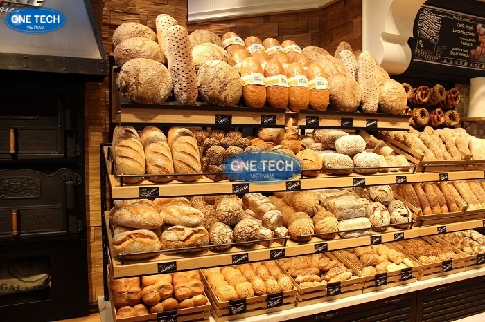

Quy trình vận hành cửa hàng Bánh mì Heo lu giòn tan
1. Chuẩn bị trước giờ mở cửa
- Kiểm tra nguyên vật liệu:
- Kiểm tra số lượng và chất lượng bánh mì, thịt heo lu, rau sống (dưa chuột, rau mùi, ớt), đồ chua (đu đủ, cà rốt), pate, chả lụa, nước sốt.
- Đảm bảo tất cả nguyên liệu tươi ngon, đạt chuẩn vệ sinh an toàn thực phẩm.
- Vệ sinh khu vực bán hàng và chế biến:
- Lau dọn quầy bán hàng, bàn ghế, khu vực chế biến.
- Kiểm tra và vệ sinh các dụng cụ, thiết bị (dao, thớt, kẹp, lò nướng bánh mì).
- Sắp xếp và trưng bày:
- Sắp xếp bánh mì, thịt heo lu, rau sống, đồ chua, nước sốt gọn gàng, đẹp mắt.
- Đảm bảo dễ dàng lấy và chế biến khi có khách.

- Kiểm tra hệ thống điện, nước:
- Đảm bảo hệ thống điện, nước hoạt động ổn định.
2. Quy trình chế biến và phục vụ
- Tiếp nhận yêu cầu khách hàng:
- Chào hỏi khách hàng thân thiện, lắng nghe yêu cầu cụ thể (loại bánh, thêm/bớt nguyên liệu).
- Chế biến bánh mì:
- Nướng bánh mì nóng giòn.
- Xẻ bánh, phết pate, cho thịt heo lu, rau sống, đồ chua, chả lụa (nếu có).
- Rưới nước sốt đặc trưng của cửa hàng.
- Đóng gói và thanh toán:
- Đóng gói bánh mì cẩn thận, đảm bảo giữ nhiệt và vệ sinh.
- Thực hiện thanh toán nhanh chóng, chính xác.
- Cảm ơn khách hàng và hẹn gặp lại.
3. Quy trình vệ sinh trong ca làm việc
- Vệ sinh liên tục:
- Lau dọn quầy hàng, khu vực chế biến ngay sau khi phục vụ khách.
- Thu gom rác thải thường xuyên.
- Kiểm tra và bổ sung nguyên liệu:
- Bổ sung kịp thời các nguyên liệu đã hết.
- Đảm bảo nguyên liệu luôn tươi mới.
4. Quy trình kết thúc ca làm việc
- Vệ sinh tổng thể:
- Vệ sinh toàn bộ khu vực bán hàng, chế biến, kho lưu trữ.
- Rửa sạch và sắp xếp dụng cụ, thiết bị.
- Kiểm kê hàng hóa:
- Kiểm kê số lượng nguyên vật liệu còn lại.
- Ghi chép vào sổ sách hoặc hệ thống quản lý.
- Báo cáo doanh thu:
- Tổng kết doanh thu trong ca, báo cáo cho quản lý.
- Tắt thiết bị điện:
- Tắt tất cả các thiết bị điện không cần thiết.
- Bàn giao ca (nếu có):
- Bàn giao công việc, tình hình cửa hàng cho ca tiếp theo.